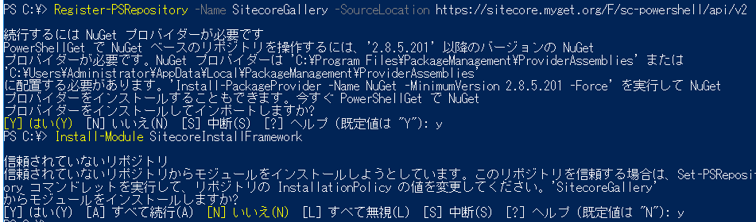

SIFのセットアップ¶
Sitecore Installation Framework をセットアップします。
SIFのインストール¶
PowerShellを管理者権限で起動します。次のコマンドを実行して、SIFをインストールするためのリポジトリを追加します。確認メッセージが表示されたら、そのまま Enter か y を入力して Enter をタイプします。
Register-PSRepository -Name SitecoreGallery -SourceLocation https://sitecore.myget.org/F/sc-powershell/api/v2
次のコマンドを実行して SIF モジュールをインストールします。確認メッセージが表示されたら、 y を入力して、Enter をタイプします。
Install-Module SitecoreInstallFramework
注釈
Update-Module SitecoreInstallFramework を実行してモジュールを最新バージョンにアップデートできます。
次の図は一連のコマンドを実行したものです。
